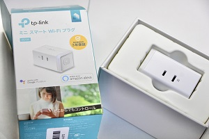

tp-link ミニスマート Wi-Fiプラグ
この前テレビでIoTのことやっててこの商品が紹介されていた！
何がすごいかって、、、インターネット対応してない家電がこれを使うことによって携帯で操作できるようになるのです！！しかもめっちゃ安い！IoTってなんだかちょっとよくわからないけど興味はある人はぜひ試してみて！お家で簡単に体験できちゃうよ！

もっと説明させてもらうと！
【リモートアクセス】
どこからでもデバイスの操作ができる
【スケジューリング】
複数のスケジュールが作れる
【お出かけモード】
外出中でも無人であることが悟られない？らしい
まだ使いこなしてないけどとりあえず色んな機能があるので動画をご覧ください！